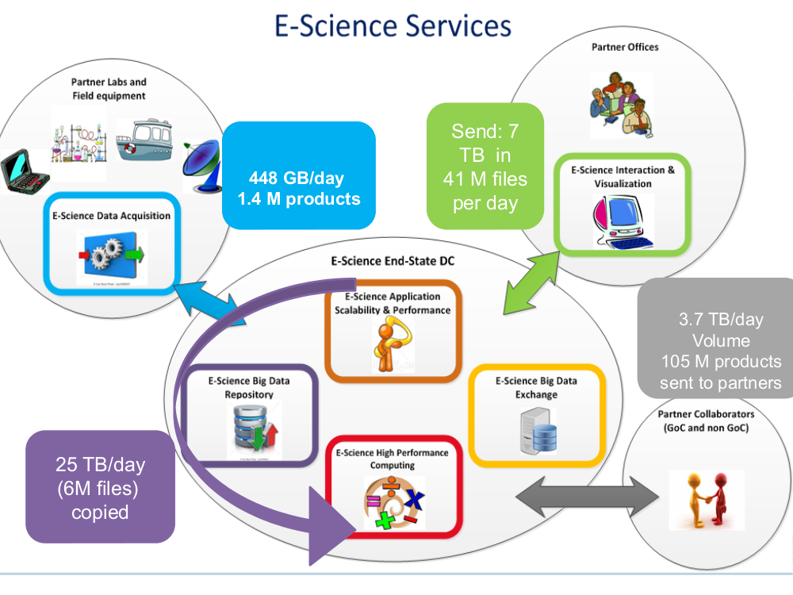
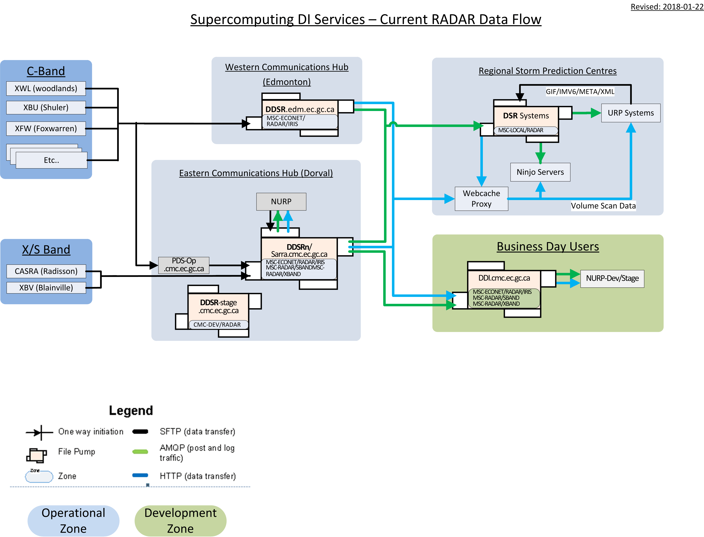

Sarracenia Janvier 2018
Sarracenia est une petite application développée de façon itérative en s’adressant à une seule cas d´usage à la fois de sorte que le développement et le déploiement sont inextricablement liés jusqu’ici. Ce processus itératif a précipité des changements au cœur de l´application qui en ont fait que jusqu’à présent elle était une cible mouvante. Dans Janvier 2018, l’application a atteint le point où tous les cas d’utilisation prévue sont traités par l’application. Au cours de l’année à venir, l’accent sera mis sur les points suivants sur la facilitation de l’embarquement, le développement de certains services dérivés, et le déploiement de la nouvelle application complète de manière plus générale.
Comparison to 2015 Video
La vidéo de novembre 2015 ( Sarracenia in 10 Minutes ) a tracé les grandes lignes d’une vision. La première phase des travaux de développement s’est déroulée en 2015 et au début de l’année 2016, suivie de déploiements importants plus tard en 2016. Cette mise à jour, écrit au début de 2018, explore les progrès réalisés principalement en 2017.
Les cas d’utilisation mentionnés dans la vidéo qui ont été implantés:
Le pompage météorologique central a fait des progrès substantiels en matière de migration. à la nouvelle pile. C’était le principal cas d’utilisation initiale qui a motivé les travaux initiaux. La transformation n’est pas complète, mais elle est bien en main.
Acquisition redondante de RADAR par l’intermédiaire de deux centres nationaux. (printemps 2016)
Ninjo national (poste de travail principal pour les prévisionnistes) Diffusion (été 2016)
Traitement RADAR unifié (application pour transformer les scans de volume en produits) les flux de données. (jusqu’en 2017.)
Cas d’utilisation dans la vidéo, mais pas encore réalisés :
Utilisation par l’utilisateur final. Quelques essais ont été achevés au début de l’année 2017, ce qui a donné lieu à certains des essais suivants et refactoring, et maintenant refactoring, et re-test.
Les ensembles de données des séquenceurs ont attendu que les cas d’utilisation par l’utilisateur final soit améliorée.
reports aux sources qui ont consommé leurs produits. C´est présent dans l´application mais il faut le configuré, et des tests et un déploiement minutieux sont nécessaires.
Mise en œuvre de cas d’utilisation imprévue :
Échange de données du SMT : CMC <-> NWS. Les EDAN ont demandé une modification de la connectivité. en décembre 2015.
HPC mirroring (à compléter au printemps 2018)
Legacy Application 7-way réplication (pour les SPC) mise en œuvre l’année dernière.
Acquisition de GOES-R (en direct à partir de janvier 2018.)
Les détails suivront.
Flots Centrales
La diagramme ci-dessous correspond aux flux de données quotidiennes déployées à l’appui du programme Environnement Canada, surtout pour les prévisions météorologiques opérationnelles, en place depuis le début des travaux jusqu´à janvier 2018.
Sarracenia est utilisée de façon opérationnelle pour acquérir environ quatre téraoctets. des observations provenant de systèmes automatisés d’observation météorologique, des RADARS météorologiques qui livrer les données directement à nos hubs, fichier public international géré par des pairs. qui fournissent des images satellitaires et des produits numériques provenant d’autres pays de l’Union européenne. les centres météorologiques nationaux.
Dans le centre de données principal du calcul haute performance (HPC), il y a deux centres de données deux magasins de chantier et deux grappes de pré- et post-traitement. En cas de défaillance d’un composant d’une chaîne, l’autre peut prendre le relais. L’entrée les données sont envoyées à une chaîne primaire, puis le traitement sur cette chaîne est mis en miroir, en utilisant la sarracénie pour copier les données dans l’autre chaîne. That´s au sujet de 16 de la 25 téraoctets du trafic du centre de données dans ce diagramme.
Une distillation des données acquises, ainsi que l’analyse et les prévisions effectuées en HPC, est les sept téraoctets en haut à droite, c’est à dire qu’il est envoyé aux sept régions. Centres de prévision des intempéries (SPC´s).
Les produits du SPC´s et du HPC central sont ensuite partagés avec le public. et des partenaires de l’industrie, du milieu universitaire et d’autres gouvernements.
Applications Météorologiques
FIXME : image ?
Il y a un certain nombre (peut-être une douzaine ?) d’applications plus anciennes (les plus importantes). BULLPREP et Scribe) utilisés depuis des décennies dans les centres de prévision des intempéries. pour créer des produits de prévision et d’alerte. Ces demandes sont basées sur un dossier. qu’ils lisent et écrivent. Auparavant, chaque application avait sa propre sauvegarde. avec l’un des six autres bureaux et des ententes bilatérales ont été conclues. pour copier des données spécifiques parmi les arbres.
En janvier 2017, réplication complète à 7 voies de l’arborescence des fichiers d’état du fichier a été mise en œuvre de manière à ce que tous les bureaux aient des copies des dossiers en format en temps réel. Ceci est accompli en utilisant la sarracénie à travers la plaque tournante orientale. N’importe quel peut maintenant prendre en charge le travail sur n’importe quel produit pour n’importe quel autre, sans qu’il n’y ait d’exigences particulières. de travail d’application nécessaire.
Acquisition de GOES-R
Acquisition de produits GOES-R simulés et réels auprès du PDA de la NOAA, ainsi que des produits GOES-R. via des liaisons descendantes locales à un endroit (pour finalement en devenir deux) était entièrement par Sarracénie. Le déploiement opérationnel de GOES-R s’est déroulé dans la région de l première semaine de janvier 2018.
acquisition HPC
FIXME : image ?
L’environnement de supercalculateur a été entièrement remplacé en 2017. Dans ce contexte, la suite d’acquisition de données environnementales du client (acronyme ADE) était de travailler avec des performances beaucoup plus élevées qu’auparavant, et d’accepter La sarracénie se nourrit directement, plutôt que d’accepter les aliments de la génération précédente. Pompe (Sundew.) Le volume et la vitesse d’acquisition des données ont été considérablement réduits. s’est améliorée en conséquence.
RADAR
Si nous commençons par l’acquisition de données RADAR, les différents systèmes RADAR utiliser FTP et/ou SFTP pour envoyer des fichiers aux centres de communication de l’est et de l’ouest. Ces hubs exécutent le composant de surveillance d’annuaire (sr_watch) et déterminent pour les analyses de volume à mesure qu’elles arrivent. Le traitement RADAR unifié (URP) sr_subscribes systems sr_subscribes to a hub, listening for new volume scans, and télécharge les nouvelles données dès qu’elles sont affichées. Les systèmes URP en dérivent alors de nouveaux et les annoncer au hub local à l’aide du composant sr_post. Avec le temps, nous espérons avoir un deuxième URP à la plaque tournante de l’Ouest.
Dans les bureaux régionaux, les serveurs de visualisation NinJo téléchargent des scans de volume et des scans de volume. Les données sont traitées à partir de l’URP en utilisant des abonnements identiques, en tirant les données de l’URP quelle que soit la plaque tournante nationale qui rend les données disponibles en premier. L’échec d’un est transparent pour les données RADAR, en ce sens que les scans de volume seront téléchargé à partir de l’autre concentrateur, et l’autre processeur URP produira le fichier produits nécessaires.
{kind=link}
Chaque site a plusieurs serveurs Ninjo. Nous utilisons des serveurs de fichiers http (des dossiers accessibles sur le Web) pour servir les données. Cela permet une intégration facile des caches web-proxy, ce qui signifie que seul le premier serveur Ninjo à demander des données sera téléchargé à partir du hub national. Les autres serveurs Ninjo obtiendront leurs données à partir du cache proxy local. L’utilisation de Sarracenia pour les notifications lorsque de nouveaux produits sont disponibles est complètement indépendante de l’utilisation de Sarracenia. méthode utilisée pour servir et télécharger des données. Les serveurs de données peuvent être implémentés avec une grande variété d’outils. et très peu d’intégration est nécessaire.
HPC Mirroring
Tout au long de l’année 2017, les travaux se poursuivaient pour mettre en place un miroir à grande vitesse entre les magasins du site du superordinateur pour permettre le basculement. Ces travaux sont maintenant dans une phase finale de déploiement et devraient être opérationnels d’ici le printemps 2018. Pour plus de détails, voir : Cas d´utilisation de miroitage CHP
Modifications d’application en 2017
Le développement de Sarracenia avait été exploratoire pendant un certain nombre d’années. Les cas d’utilisation initialement attaqués étaient ceux qui avaient un degré élevé de participation d’experts. Elle s’est déroulée en suivant le stratégie de produit minimum viable (MVP) pour chaque cas d’utilisation, en acquérant des fonctionnalités pour traiter le cas d’utilisation suivant avant le déploiement. En 2016, le déploiement national de NinJo et de la météo.
Exploration des cas d’utilisation élargie :
Mirroring : Avant ce cas d’utilisation, la sarracénie était utilisée pour la diffusion de données brutes sans égard pour permissions, propriété, liens symboliques, etc…. Pour le cas d’utilisation en miroir, les métadonnées exactes. la réplication était une exigence étonnamment complexe.
Mise en œuvre C : En explorant la mise en miroir à grande échelle, il est devenu évident que pour un nombre suffisamment important d’images (27 millions de fichiers), la seule méthode pratique disponible était l’utilisation d’une bibliothèque C shim. Le fait que tous les codes d’utilisateur invoquent un script python3 est complètement absurde dans un environnement HPC. Il était nécessaire d’implémenter une version C du code d’affichage Sarracenia pour l’utilisation par la bibliothèque shim. Une fois l’implémentation C commencée, ce n’était qu’un petit travail supplémentaire pour implémenter une version C de sr3_watch (appelé sr_cpost) qui était beaucoup plus efficace en mémoire et en CPU que l’original python.
Implantation de client Node.js : Un client du datamart public a décidé d’implémenter suffisamment de Sarraenia pour télécharger les avertissements en temps réel.
L’application a été refactorisée pour maximiser l’uniformité par la réutilisation du code, réduisant ainsi d’environ 20 % les coûts d’ exploitation de l’application. la taille du code en un point. Le code est revenu à la taille initiale lorsque de nouvelles fonctionnalités ont été ajoutées, mais il reste assez compact à moins de 20 kloc.
Utilisation par l’utilisateur final : Tous les déploiements effectués jusqu’à présent sont mis en œuvre par des analystes ayant une compréhension approfondie de Sarracenia, ainsi qu’un soutien et des connaissances approfondies. Cette année, nous avons vécu plusieurs itérations et tentatives d’avoir des utilisateurs qui déploient leurs flux, recueillant les retours d’expérience et facilitant la tâche des utilisateurs de la prochaine itération. Beaucoup de ces changements étaient des changements cassants, en ce que les options et les moyens ou étaient encore des prototypes et nécessitaient une révision.
Modifications pour prendre en charge l’utilisation par l’utilisateur final :
Les échanges étaient une ressource définie par l’administrateur. Le modèle de permission a été modifié de telle sorte que les utilisateurs peuvent maintenant déclarer les échanges.
Auparavant, il fallait regarder sur les sites web pour trouver des exemples. Maintenant, la commande list affiche de nombreux exemples inclus avec le paquet.
Il était difficile de trouver où mettre les fichiers de configuration. Les commandes list/add/remove/edit simplifient cela.
Dans chaque point d’entrée de plugin, il fallait modifier différentes variables d’instance, a été refactorisé pour la cohérence sur tous (on_msg, on_file, on_part, on_part, on_post, do_download, do_send, do_send, etc….)
Les spécifications de cloisonnement étaient obscures et ont été remplacées par l’option Option blocksize, avec seulement trois possibilités : 0, 1, beaucoup.
Le routage à travers plusieurs pompes était obscur. L’algorithme original était remplacé par un plus simple avec des valeurs par défaut plus intelligentes. Les utilisateurs peuvent maintenant généralement l’ignorer.
Une interface de plugin beaucoup plus élégante est disponible pour avoir des routines multiples qui fonctionnent ensemble, spécifiés dans un seul plugin.
Auparavant, annoncés uniquement sur les serveurs web par rapport à l’URL racine. Maintenant, la prise en charge des URL de base non racine a été ajoutée.
La seule caractéristique opérationnelle majeure introduite en 2017 a été Sauvegarder/restaurer/ressai** : Si une destination a un problème, il y a risque substantiel de surcharger les courtiers AMQP en laissant les files d’attente de produits à de transfert se transforment en millions d’entrées. Fonctionnalité pour une utilisation efficace (en parallèle) décharger les files d’attente des courtiers sur le disque local a été implémenté afin d’adresser ceci. Dans un premier temps, la récupération devait être déclenchée manuellement (restauration) mais par à la fin de l’année, un mécanisme automatisé de récupération (réessai) fonctionnait. de déploiement, ce qui réduira les besoins en matière de surveillance et de surveillance. l’intervention dans les opérations.
À venir en 2018
A partir de la version 2.18.01a5, tous les cas d’utilisation ciblés ont été explorés et des solutions raisonnables sont disponibles, de sorte qu’il ne devrait pas y avoir d’autres modifications à la la langue ou les options de configuration existantes. Aucun changement à l’existant les paramètres de configuration sont planifiés. Des ajouts mineurs peuvent encore se produire, mais pas au prix de la rupture des configurations existantes. Le noyau est maintenant terminée.
Attendez-vous au début de l’année 2018 pour la dernière version de paquet alpha et pour les travaux ultérieurs d’être sur une version bêta avec une cible de beaucoup plus de version stable à longue durée de vie en 2018.
Le déploiement des cas d’utilisation HPC en miroir sera terminé.
Le cas d’utilisation du dépôt permanent de fichiers (PFD) sera déployé. À l’heure actuelle, ce est utilisé pour couvrir un horizon temporel court. On peut l’étendre arbitrairement dans le cadre de la en persistant l’arbre basé sur le temps jusqu’au stockage proche de la ligne. En développement depuis 2016, en progression progressive.
Améliorer la cohérence du déploiement : Les changements apportés en 2017 ont semé la confusion dans l’esprit de l les analystes experts, car des changements importants dans les détails se sont produits d’une version à l’autre. Différents déploiements utilisent actuellement des versions opérationnelles différentes, et la plupart d’entre eux sont des versions opérationnelles différentes. les questions soulevées dans le cadre des opérations sont traitées par le code existant, mais ne le sont pas. mais déployé dans ce cas d’utilisation. En 2018, nous réexaminerons les déploiements précoces pour les mettre à jour.
Amélioration continue des tests de pré-déploiement.
L’outil d’indexation Sarrasemina, qui facilite la recherche de flux à déployer. pour aider à l’embarquement.
Amélioration de la documentation d’embarquement. Les matériaux de référence sont encore en cours, mais Les matériaux d’introduction à démarrage rapide et les matériaux orientés gateway ont besoin d’être travaillés. Des traductions en français sont également nécessaires.
Rapports : Bien que le reportage ait été mis en place dès le début, il s’est avéré être très efficace. Les déploiements effectués jusqu’à présent l’ont donc omis. Maintenant que le déploiement les charges se calment, cette année devrait nous permettre d’ajouter un rapport en temps réel. routage vers les configurations déployées. Il n’y a pas de fonctionnalité à développer, car tout est déjà dans l’application, mais le plus souvent non utilisé. L’utilisation peut découvrir d’autres problèmes.
algorithmes de checksum plugins. Actuellement, les algorithmes de somme de contrôle sont intégrés. Il est nécessaire de prendre en charge les plugins pour rajouter algorithmes de somme de contrôle définis par l’utilisateur (attendus en 2.18.02a1).
Poursuite du remplacement progressif des configurations des applications alpha. (RPDS, Sundew).
Poursuite de l’adaptation des applications à Sarracenia (DMS, GOES-R).
Déploiement d’instances supplémentaires : flux.weather.gc.ca, hpfx.collab.science.gc.ca, etc…..
Poursuite des travaux sur l’approbation et le financement de la plaque tournante de l’Ouest (aka. Projet Alta).